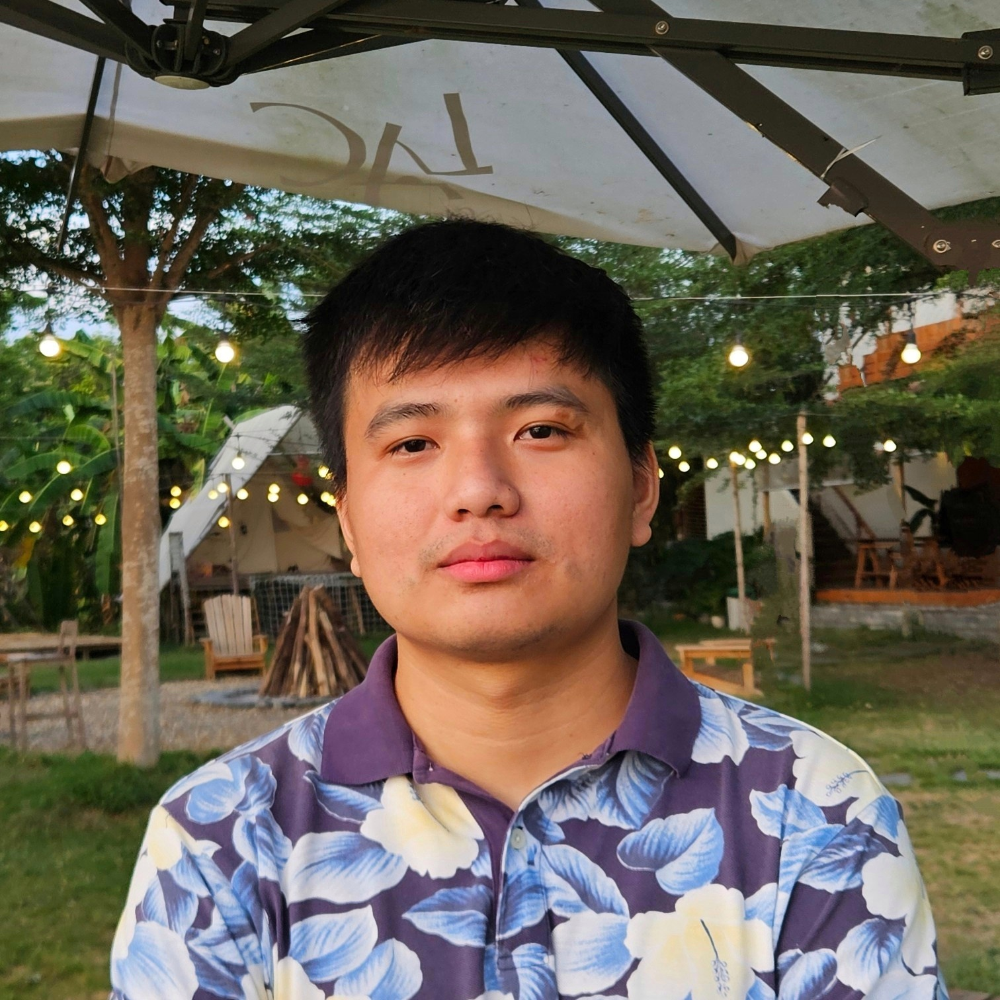

TRAN ANH VU’s Profile
Automotive Embedded Software Engineer
Introduction
{kind=link}

I am a software engineer with more than six years of experience in embedded software development for the automotive industry. My primary skills revolve around AUTOSAR and embedded C programming. I specialize in the development and integration of AUTOSAR software components (SWCs), RTE/BSW configuration and MCAL development. Additionally, I have a working knowledge of various communication protocols such as CAN, LIN, and the Unified Diagnostic Service (UDS) protocol. My professional experience has involved collaborating with cross-functional teams located in Australia, Germany, Japan, and India.
I aspire to continue my career in the automotive domain and further enhance my skills to actively contribute to technological advancements in the industry.
In my free time, I play soccer and badminton.
- Contact:
- Phone/WhatsApp:
+84 935618819
- Email:
- LinkedIn:
Toolbox
- Primary Skills:
AUTOSAR, Embedded C, Leading, Analysis, Debugging, ASPICE, DaVinci Developer/Configurator, CANoe, ETAS ISOLAR-A, Git, iSYSTEM WinIDEA
- Secondary Skills:
Cyber Security, Python, Lauterbach Trace32, DOORS, ALM, Simulink, reStructedText, PlantUML, Agile, Scrum
- Language:
Vietnamese, English
Work Experiences
2019.12 - 2024.04: Lead Engineer, Bosch Global Software, Ho Chi Minh City, Vietnam
2020.12 - 2024.04: Project: ECU handles communication with the phone
I was a team leader of a team of 15 members, I supervised, consulted, defined/breakdown tasks and provided technical support to team members to complete their tasks.
Communicated, discussed, and negotiated with stakeholders and customers for delivery planning, work packages, quality and issues resolution.
Developed internal strategies, training plans and activities to build up the team.
As a developer, I am involved in developing and integrating software for an Electronic Control Unit (ECU) responsible for handling communication with mobile devices, following Car Connectivity Consortium specifications.
My responsibilities encompass RTE Integration, BSW Configuration (Com Stack, Diag Stack, NvM, OS, Crypto Stack, etc.), the development of SWC ARXML, integration and implementation of C functions, reviewing, static testing with Google Test, and resolved issues reported by testers or customers.
Onsite: Japan (1 month) for support customers debugging, Australia (2 weeks) for project kickoff and training, and India (3 months) for training and work assignments.
Programming languages and tools: Embedded C, AUTOSAR, Davinci Developer and Configurator, Green Hills MULTI, iSYSTEM WinIDEA, ISOLAR-A, ALM, Git, reStructedText, PlantUML.
2019.12 - 2020.11: Project: ECU extended IO control on the vehicle
I developed applications following OEM requirements and integrated OEM ECU extracts.
My responsibilities included integrating and configuring RTE/BSW based on the OEM ECU extract, developing applications using MATLAB Simulink, addressing issues reported by testers or customers, and creating automation test scripts in Capl and Python.
Programming languages and tools: Embedded C, AUTOSAR, Davinci Developer and Configurator, Green Hills MULTI, iSYSTEM WinIDEA, DOORS, Simulink.
2017.09 - 2019.11: Software Engineer, Renesas Design Vietnam, Ho Chi Minh City, Vietnam
2017.09 - 2019.11: Project: RCAR AUTOSAR MCAL
I developed MCAL/CDD modules for the RCAR SoC series of Renesas. My primary responsibility was the ICCOM module, which managed data communication between two cores in the chip system.
I also provided support for the development of other modules such as I2C, PORT, and CRC.
My responsibilities included developing requirements, designing documents, and implementing code.
Additionally, I was in charge of static testing, unit testing, software testing, debugging, and resolving issues.
I also participated in Functional Safety ISO26262 activities, including implementing and testing safety requirements, FuSa checklists, maintaining FMEA analysis, conducted various analyses (e.g.: Thread-safe/Re-entrancy analysis, synchronous/asynchronous analysis, and Pointer analysis) and joint assessments for ASIL certification.
Programming languages and tools: Embedded C, AUTOSAR, Perl, Python, GHS, ARM, Git, SVN, Reqtify, Enterprise Architect, Lauterbach Trace32
Education
Bachelor of Technology in Electronics and Communication Engineering from the University of Technology and Education, Ho Chi Minh City, Vietnam
Others
Awards:
Citizenship: Vietnamese